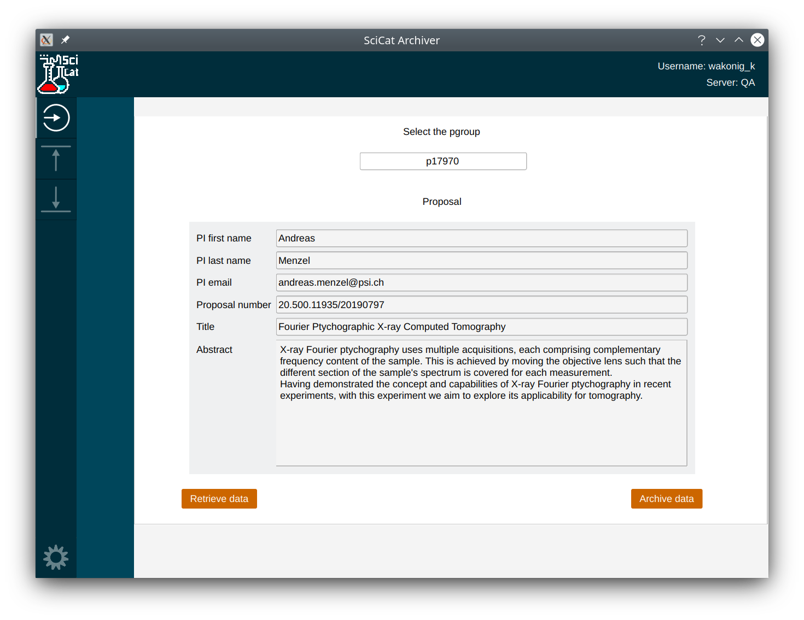
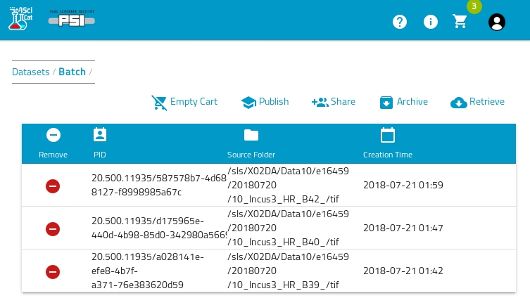
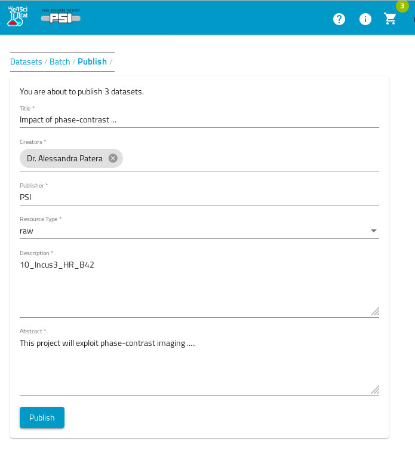

Table of Contents
- 1. Overview and Concepts
- 2. The Concept of Datasets
- 3. Getting started
- 4. Ingest
- 5. Archive
- 6. Retrieve
- 7. Ingest, Archive and Retrieve with QT desktop application SciCat
- 8. Publish
- 9. Cleanup and Retention
- 10. Troubleshooting
- 11. Appendix
- 11.1. Installation of Tools
- 11.2. Size limitations
- 11.3. Recommended file structure for raw datasets
- 11.4. Metadata Field Definitions
- 11.5. About Scientific Values and Units
- 11.6. Use Case Examples
- 11.7. Policy settings and email notifications
- 11.8. Analyzing Metadata Statistics
- 11.9. Access to the API (for script developers)
- 11.10. Using datasetIngestor inside wrapper scripts (for developers)
- 11.11. Ingestion of datasets which should never be published
- 11.12. Retrieving proposal information
- 11.13. Link to Group specific descriptions
- 11.14. List of known creationLocation for raw data
- 12. Update History of Ingest Manual
Overview and Concepts
PSI offers a Data Catalog Service for annotated long-term data storage , retrieval and publishing. The annotation information , i.e. metadata is stored in a central database to allow for fast query for the data. The raw data itself is stored on the PetaByte Archive at the Swiss National Supercomputing Centre (CSCS). The Data Catalog and Archive is designed to be suitable for:
- Raw data generated by PSI instruments or simulations
- Derived data produced by processing the raw input data
- Data required to reproduce PSI research and publications, e.g FAIR data
All data which are added to the data catalog must either not be classified or have a classification level of "normal". You are not allowed to add any personal or private data. You are not allowed to use the data catalog as a backup system. Data must come from scientific activities pursued at PSI. If data from external partner institutes should be stored, then this needs a dedicated contract signed by the management.
The service is based on the catalog system SciCat, documented at https://scicatproject.github.io/ and https://github.com/SciCatProject/, which is an open source system that allows to ingest and retrieve datasets in different ways, matching the requirements of the respective use cases. The use cases differ in the level of automation provided.
Data is always stored in terms of datasets, which you can think of as a
collection of files combined with administrativ and scientific metadata.
This manual describes how you can use this services by following the main steps in the lifecycle of the data management:
- Definition and ingestion of metadata
- Archiving of the datasets
- Retrieving of datasets
- Publishing of datasets
- Retention of datasets
Note: as of today (June 2021) the services can be only be used from within the PSI intranet with the exception of the published data, which is by definition publicly available. Although the service itself can be used from any operating system, the command line and GUI tools currently offered are available only for Linux and Windows platforms.
The Concept of Datasets
For the following it is useful to have a better understanding of the concept of a dataset. A dataset is a logical grouping of potentially many files. It is up to the scientist to define datasets from the files. When defining datasets take the following conditions into account
- a dataset is the smallest unit for adding meta data
- a dataset is the smallest unit for data handling (archiving and retrieval)
- a dataset is the smallest unit for publication (DOI assignmnet)
Therefore you need to find a compromise between putting too few or too many files into a single dataset.
Ingestion of datasets means, that you make data known to the data
catalog by providing both metadata about the dataset and the file
listing comprising the dataset. For each dataset a persistent
identifier (PID) is automatically created.
It is important to note that the data catalog is a "passive" system in the sense that it has to be told if new data arrives. The data catalog has no direct access to the file systems containing the actual files. In contrast the datasetIngestor program is run from systems, which have access to the data files.
The datasets always belong to an so called ownerGroup. Only members of these groups have access to the data, unless the dataset is being published. At PSI there are two types of ownerGroups,
- pgroups, starting with letter "p". They are used for experimental data linked to a proposal system. They are managed by the digital user office DUO
- a-groups, starting with "a-" for any other data to be archived
Once data is contained in the data catalog, this information is considered to be stored permanently. However after a retention period the connected raw data files may actually be deleted. In this case the dataset is marked as deleted in the data catalog, but the data catalog entry persists, in agreement with the FAIR principles.
Warning: you should not modify the files which make up your dataset after the dataset was ingested to the datacatalog. This means that you should ingest the data only, if you are sure that no further modifications on the files take place. The subsequent archive job will only take care of the files which existed at ingest time and otherwise return an error message and not archive the data at all.
Getting started
You will need a PSI account and this account needs to be member in so
called p-groups, which are managed by the PSI digital user office
proposal system and are usually linked to a principal investigator
(PI). This is required to define the authorization to the data,
i.e. who is allowed to see which datasets.
In addition to these so called user accounts there are a couple of
pre-defined functional accounts which are used for automated
processes. In particular each beamline has one such functional
account, e.g. called sls-tomcat, which can be used for automated
ingestion of new data or to query all data generated at a given
beamline. These accounts are only defined in the data catalog system
and are given to the respective beamline managers.
If your data can not be linked to this proposal system you can still
use the services, but you may need to ask for the creation of a
so-called a-group and become member in these groups. You can order
an a-group via ServiceNow under PSI Service Catalog -> IT ->
Identity & Access Management -> Order Group / Project drive. Under
Account Type choose Archive Group / Project Drive. You will be
asked about the group members. The group owner is not automatically
added to the group members.
To use some of the software you may need to install it first. Installation is described in the appendix Installation of Tools
Ingest
Important Update since April 14th 2022
For all commandline tools, like the datasetIngestor, datasetRetriever etc, using your own user account you have to use the –token option with a predefined API token SCICAT-TOKEN. Specifying username/password is not possible for normal users (this limitation is caused by the switch to a new authentication protocol). The easiest to get such an API token is to sign it at https://discovery.psi.ch, then follow the "Login with PSI account" button. This will bring you to the user settings page, from where you can copy the token with a click on the corresponding copy button.
For functional accounts, like beamline accounts you can however continue to use username/password authentication instead.
Definition of input files
First you need to specify the location of the files that you want to have stored as one dataset. A typically example would be all the files taken during a measurement, a scan etc or all output data from an analysis of raw data files. In the simplest case it is sufficient to define only one location. i.e. the sourceFolder, which should contain all the files (and only those files) that make up the dataset. In a more general case you can also specify an explicit list of files and/or directories that you want to have assembled to a dataset. See the datasetIngestor command options for details. The appendix has a Recommended file structure for raw datasets on disk. Please take note of the size limitations of a dataset, as defined in the appendix Size limitations
Definition of metadata
There are two types of metadata which need to be provided:
- administrative metadata: specifies when and where the data is taken, who is the owner etc. There are both mandatory and optional fields and the fields depend on the type of the dataset (generic/raw/derived), see Section 11.4 below. The most important metadata field for ownership is the value of the "ownerGroup" field, which defines a group name, whose member have access to the data.
- scientific metadata: this depends on the scientific discipline and can be defined in a flexible way by respective research group. It is up to the research groups to define the format(s) of their data that they want to support, ideally on an international level. See also the section About Scientific Values and Units .
Therefore the next step to ingesting your data into the catalog is to prepare a file describing what data you have. This is called metadata.json, and can be created with any text editor. It can in principle be saved anywhere, but keeping it with your archived data is recommended.
Here is a minimalistic example the file metadata.json for raw data:
{
"creationLocation": "/PSI/SLS/TOMCAT",
"sourceFolder": "/data/p16/p16623/June2020",
"type": "raw",
"ownerGroup":"p16623"
}
In the Appendix Use Case Examples you find many more examples for metadata.json files, both for raw and derived data. Here is a more real life example from Bio department:
{
"principalInvestigator": "albrecht.gessler@psi.ch",
"creationLocation": "/PSI/EMF/JEOL2200FS",
"dataFormat": "TIFF+LZW Image Stack",
"sourceFolder": "/gpfs/group/LBR/pXXX/myimages",
"datasetName": "myimages",
"owner": "Wilhelm Tell",
"ownerEmail": "wilhelm.tell@psi.ch",
"type": "raw",
"description": "EM micrographs of amygdalin",
"ownerGroup": "a-12345",
"scientificMetadata": {
"sample": {
"name": "Amygdalin beta-glucosidase 1",
"uniprot": "P29259",
"species": "Apple"
},
"dataCollection": {
"date": "2018-08-01"
},
"microscopeParameters": {
"pixel size": {
"value": 0.885,
"unit": "A"
},
"voltage": {
"value": 200,
"unit": "kV"
},
"dosePerFrame": {
"value": 1.277,
"unit": "e/A2"
}
}
}
}
For manual creation of this file there are various helper tools available. One option is to use the ScicatEditor https://bliven_s.gitpages.psi.ch/SciCatEditor/ for creating these metadata files. This is a browser-based tool specifically for ingesting PSI data. Using the tool avoids syntax errors and provides templates for common data sets and options. The finished JSON file can then be downloaded or copied into a text editor.
Another option for datasets on ra or merlin is to use the SciCat
graphical interface from NoMachine. This provides a graphical
interface for selecting data to archive. This is particularly useful
for data associated with a DUO experiment and p-group. Type SciCat to
get started after loading the datacatalog module. The GUI also
replaces the the command-line ingestion decribed below.
After preparing your metadata.json file, run the following steps to ingest the data. First, perform a "dry-run" that will check the metadata for errors: ( Please note that in the following only the Linux type notation is used. For the changes which apply to Windows see the separate section below)
datasetIngestor metadata.json
It will ask for your PSI credentials and then print some info about the data to be ingested. This command will scan the files, make checks and extract further metadata information from the files and from the DUO system, unless the corresponding metadata fields are already provided in the metadata.json file. If there are no errors, proceed to the real ingestion:
datasetIngestor --ingest metadata.json
For particularly important datasets, you may also want to use the parameter –tapecopies 2 to store redundant copies of the data.
You may be asked whether you want to copy the data first to a central system. This step is needed for all files which are not residing on one of the central fileservers at PSI. In particular local (windows) workstations/PCs are likely to fall in this category.
There are more options for this command, just type
datasetIngestor
to see a list of available options. In particular you can define explicit list of files to be combined into a dataset, which can come from many different folders by providing a filelisting.txt file containing this information in addition to the metadata.json file. The section in the Appendix Using the datasetIngestor Tool has more details
Special notes for the decentral use case
For Windows
For Windows you need execute the corresponding commands inside a powershell and use the binary files ending in .exe, e.g.
datasetIngestor.exe -token SCICAT-TOKEN -user username:password -copy metadata.json
For Windows systems you can only use personal accounts and the data is
always handled as decentral case, i.e. the data will first be copied
from the windows machine to a central file server via scp
first. Therefore you need to specify all of the above parameters
-token, -user and -copy.
Please also note the syntax, that has to be used for the definition of the sourceFolder inside the metadata.json file: this has to be in the following form:
"sourceFolder": "/C/Somefolder/etc",
, i.e. forward slashes and no colon ":" after the drive letter like "C:" in this case.
For Linux.
You must have a valid kerberos ticket in order to be able to copy the data to the intermediate storage server. You can use the kinit command to get this ticket.
Summary of the different use cases
The following table summarizes the different use cases
| OS | sourceLocation | Account-Type | Neededed parameters | Comment |
|---|---|---|---|---|
| Linux | central | User | token | Fetch token via Web GUI discovery.psi.ch |
| Linux | central | Functional | username/pw | The tool fetches token from API server |
| Linux | anywhere/decentral | User | token + Kerb ticket | Token for API, Kerb ticket for copying data |
| Linux | anywhere/decentral | Functional | not supported | Functional accounts not existing on ssh server |
| Windows | central | User | (token) | Needs mounting of Windows FS to Arema |
| Windows | central | Functional | (username/pw) | dito |
| Windows | anywhere/decentral | User | token + username/pw | Token for API, username/pw for copying data |
| Windows | anywhere/decentral | Functional | not supported | Functional accounts not existing on ssh server |
Archive
If there are no errors, your data has been accepted into the data catalog! From now on, no changes should be made to the ingested data. This is important, since the next step is for the system to copy all the data to the CSCS Petabyte archive. Writing to tape is slow, so this process may take some time, and it will fail if any modifications are detected.
Triggering the copy to tape can be done in 3 ways. Either you do it automatically as part of the ingestion
datasetIngestor --ingest --autoarchive metadata.json
In this case directly after ingestion a job is created to copy the data to tape. Your dataset should now be in the queue. Check the data catalog: https://discovery.psi.ch. Your job should have status 'WorkInProgress'. You will receive an email when the ingestion is complete.
The second method is to use the discovery.psi.ch to interactively start the archive job: click on the "Archivable" button. You should see the newly ingested datasets. Select all the datasets you want to have archived and click 'Archive'. You should see the status change from 'datasetCreated' to 'scheduleArchiveJob'. This indicates that the data is in the process of being transferred to CSCS. After some time the dataset's status will change to 'datasetOnAchive' indicating the data is stored.
A third option is to use a command line version datasetArchiver.
datasetArchiver [options] (ownerGroup | space separated list of datasetIds)
You must choose either an ownerGroup, in which case all archivable datasets
of this ownerGroup not yet archived will be archived.
Or you choose a (list of) datasetIds, in which case all archivable datasets
of this list not yet archived will be archived.
List of options:
-devenv
Use development environment instead or production
-localenv
Use local environment (local) instead or production
-noninteractive
Defines if no questions will be asked, just do it - make sure you know what you are doing
-tapecopies int
Number of tapecopies to be used for archiving (default 1)
-testenv
Use test environment (qa) instead or production
-token string
Defines optional API token instead of username:password
-user string
Defines optional username and password
Retrieve
Here we describe the retrieval via the command line tools. A retrieve process via a desktop GUI application is described in the section SciCatArchiver GUI .
Retrieving is two-step process: first the data is copied from tape to a central retrieve server. From there the data needs to be copied to the final destination system of your choice.
First Step
For the first step: login to https://discovery.psi.ch , find the datasets you want to retrieve and selected all "Retrievable" datasets by clicking the corresponding button. Finally click the retrieve button. This will create a retrieve job. Once it is finshed you will get an email. Depending on the size of your datasets this may take minutes (e.g. for 1GB) up to days (e.g for 100TB)
Second Step (for Linux)
Standard commands
For the second step you can use the datasetRetriever command, which uses the rsync protocol to copy the data to your destination.
Tool to retrieve datasets from the intermediate cache server of the tape archive
to the destination path on your local system.
Run script with 1 argument:
datasetRetriever [options] local-destination-path
Per default all available datasets on the retrieve server will be fetched.
Use option -dataset or -ownerGroup to restrict the datasets which should be fetched.
-chksum
Switch on optional chksum verification step (default no checksum tests)
-dataset string
Defines single dataset to retrieve (default all available datasets)
-devenv
Use development environment (default is to use production system)
-ownergroup string
Defines to fetch only datasets of the specified ownerGroup (default is to fetch all available datasets)
-retrieve
Defines if this command is meant to actually copy data to the local system (default nothing is done)
-testenv
Use test environment (qa) (default is to use production system)
-token string
Defines optional API token instead of username:password
-user string
Defines optional username and password (default is to prompt for username and password)
For the program to check which data is available on the cache server and if the catalog knows about these datasets, you can use:
datasetRetriever my-local-destination-folder
======Checking for available datasets on archive cache server ebarema4in.psi.ch:
Dataset ID Size[MB] Owner SourceFolder
===================================================================
0f6fe8b3-d3f1-4cfb-a1af-0464c901a24f 1895 p16371 /sls/MX/Data10/e16371/20171017_E2/cbfs/2017-10-17_22-28-30_Na108_thau7_100degs_dtz60_f_500_Hz_Eth0_6200_eV
58f2037e-3f9b-4e08-8963-c70c3d29c068 1896 p16371 /sls/MX/Data10/e16371/20171017_E2/cbfs/2017-10-17_21-41-02_cca385a_lyso8_100degs_f_500_Hz_Eth0_6200_eV
cf8e5b25-9c76-49a7-80d9-fd38a71e0ef8 3782 p16371 /sls/MX/Data10/e16371/20171017_E2/cbfs/2017-10-18_10-15-41_na108_thau6_50degs_lowdose_pos1_f_500_Hz_Eth0_6200_eV
df1c7a17-2caa-41ee-af6e-c3cf4452af17 1893 p16371 /sls/MX/Data10/e16371/20171017_E2/cbfs/2017-10-17_20-58-34_cca385a_lyso3_100degs_f_500_Hz_Eth0_6200_eV
If you want you can skip the previous step and directly trigger the file copy by adding the -retrieve flag:
datasetRetriever -retrieve <local destinationFolder>
This will copy the files into the destinationFolder using the original sourceFolder path beneath the destinationFolder. This is especially useful if you want to retrieve many datasets, which you expect to appear in the same folder structure as originally. S Optionally you can also verify the consistency of the copied data by using the -chksum flag
datasetRetriever -retrieve -chksum <local destinationFolder>
If you just want to retrieve a single dataset do the following:
datasetRetriever -retrieve -dataset <datasetId> <local destinationFolder>
If you want to retrieve all datasets of a given ownerGroup do the following:
datasetRetriever -retrieve -ownergroup <group> <local destinationFolder>
Expert commands
If you prefer to have more control over the file transfer you are free to type your own rsync commands, e.g. to simply the folders available in the retrieve cache do:
rsync -e ssh --list-only pb-retrieve.psi.ch:retrieve/
To actually copy the data over use:
rsync -e ssh -av pb-retrieve.psi.ch:retrieve/{shortDatasetId} your-destination-target/
In this case the shortDatsetId is the dataseid id without the PSI prefix, e.g. for dataset PID 20.500.11935/08bc2944-e09e-48da-894d-0c5c47977553 the shortDatasetId is 08bc2944-e09e-48da-894d-0c5c47977553
Second Step (for Windows)
The second step for Windows is instead using the sftp protocol. Therefore any sftp client for Windows, like e.g. Filezilla, can then be used to retrieve the data to your local Windows PC. The following connection information must be provided, taking the command line client access via powershell as an example
# for the production system
sftp -P 4222 your-username@pb-retrieve.psi.ch
# or for the test system
sftp -P 4222 your-username@pbt-retrieve.psi.ch
After the connection is built up you can copy files recursively, e.g. using the "get -r *" command. With the filezilla GUI you can achieve the same via drag and drop operations
Ingest, Archive and Retrieve with QT desktop application SciCat
Important Update since April 14th 2022:
You currently first need to get a token before you can use SciCat: the easiest to get such an API token is to sign it at https://discovery.psi.ch, then follow the "Login with PSI account" button. This will bring you to the user settings page, from where you can copy the token with a click on the corresponding copy button.
General considerations
SciCat is a GUI based tool designed to make initial
ingests easy. It is especially useful, to ingest data, which can not
be ingested automatically. Therefore it is designed in particular to
assist you when archiving derived datasets. Often, the archival of
derived data cannot be scheduled in advance, nor does it follow a
strict file structure. The SciCat GUI can help you to ingest such
datasets more easily. Yet, the ingestion of raw datasets is also
supported. Additionally, the tool also allows for the convenient
retrieval of datasets.
Getting started
Currently, SciCat is supported on PSI-hosted Linux and Windows
systems and is accessible on the Ra cluster as part of the datacatalog
module: just type
module load datacatalog
Then the software can be started with
SciCat
On the SLS beamline consoles the software is also pre-installed in the /work/sls/bin folder, which is part of the standard PATH variable.
If you are not working on the Ra cluster you can download the software on Linux:
/usr/bin/curl -O https://gitlab.psi.ch/scicat/tools/raw/master/linux/SciCat;chmod +x ./SciCat
On Windows the executable can be downloaded from
https://gitlab.psi.ch/scicat/tools/-/blob/master/windows/SciCatGUI_Win10.zip
To start the GUI, unzip the directory and execute SciCat.exe
Login and permissions
After starting the GUI, you will be asked for a username and password. Please enter your PSI credentials. Functional accounts are not supported.
Pgroup selection
The first step is always to select the pgroup. If there is no proposal assigned to this account, you will have to specify the information about the PI manually.

Archiving
After selection the files, you will be prompted with a metadata editor, where you can modify the general info, such as dataset name, description etc. Please make sure that you select the correct data type (raw or derived). As a general rule of thumb, it is a derived dataset if you can specify a raw dataset as input. If you want to ingest a derived dataset, you can specify corresponding raw datasets on the "Input datasets" tab. To edit scientific metadata, switch to "Scientific metadata" tab.
Retrieval
Retrieving successfully archived datasets from SciCat is a two-step process. First you will have to retrieve to an intermediate server. Once the data is there, you will be notified by email. The final step is to copy the data to the final destination on your machine. Both steps can be steered from within the GUI.
On the retrieve page, all datasets of your pgroup are listed. If the data has been archived successfully, the cell in column "retrievable" is set to "true". To retrieve the data to the intermediate file server, select the datasets that you want to retrieve and click on "Retrieve." After the retrieval, the column "retrieved" is set to true. You are now able to start copying the data to you local machine by selecting the desired datasets and clicking on "Save."
Settings
Additional settings, such as the default value for certain fields can be modified in settings panel (button on the lower left corner).
Publish
As part of a publication workflow datasets must become citable via a digital object identifier (DOI). This assignment is done as part of the publication workflow described below. The publication then can link to these published datasets using this DOI. The DOIs can link to both raw and/or derived datasets. The published data and therefore the DOI ususally refers to a set of Datasets, thus avoiding the need to list potentially thousands of individual dataset identifiers in a journal publication.
You publish data in the following way: go to https://discovery.psi.ch , login and select all the datasets, that you want to publish under a new DOI.

Then you add these datasest a a "shopping cart" by using the "add to Cart" button. You can repeat this often as needed. Once finished with the selection you can "check out" the cart (click on the cart in the top bar) and pick the "Publish" action.

This opens a form with prefilled information derived from the connected proposal data. This data can then be edited by the user and finally saved.

This defines the data as to be published and makes it known to the data catalog, but the corresponding DOI is not yet made globally available. For this last step to happen, someone with access to this newly generated published data definition (e.g. the person defining the published data or e.g. the PI) has to hit the "register" button. This will trigger the global publication of the DOI. The links on https://doi.org are usually updated within one day, so wait one day before following these links or searching for the doi via the doi reolver.
All published data definitions are then openly available via the so called "Landing Pages", which are hosted on https://doi.psi.ch .
The file data itself data becomes available via the normal data export System of the Ra cluster, which requires however a PSI account. If you want to make the file data anonymously available you need to send a corresponding request to stephan.egli@psi.ch for now. This process is planned to be automated in future.
For now all publication are triggered by a scientist explicitly, whenever necessary. In future in addition an automated publication after the embargo period (default 3 years after data taking) will be implemented (details to be defined)
Cleanup and Retention
This part is not yet defined.
Troubleshooting
Locale error message
If you get error messages like the following (so far only happened from Mac Computers)
perl: warning: Setting locale failed.
perl: warning: Please check that your locale settings:
....
then you need to prevent that the Mac ssh client sends the LCTYPE variable. Just follow the description in: https://www.cyberciti.biz/faq/os-x-terminal-bash-warning-setlocale-lc_ctype-cannot-change-locale/
Invalid certificate messages
The following message can be safely ignored:
key_cert_check_authority: invalid certificate
Certificate invalid: name is not a listed principal
It indicates that no kerberos token was provided for authentication. You can avoid the warning by first running kinit (PSI linux systems).
Long Running copy commands
For decentral ingestion cases, the copy step is indicated by a message 'Running [/usr/bin/rsync -e ssh -avxz …'. It is expected that this step will take a long time and may appear to have hung. You can check what files have been successfully transfered using rsync:
rsync--list-only user_n@pb-archive.psi.ch:archive/UID/PATH/
where UID is the dataset ID (12345678-1234-1234-1234-123456789012) and PATH is the absolute path to your data. Note that rsync creates directories first and that the transfer order is not alphabetical in some cases, but it should be possible to see whether any data has transferred.
Kerberos tickets
As a normal user you should have a valid Kerberos ticket. This is usually the case on the centrally provided Linux machines automtically. You can verify the existence with the "klist" command. In case no valid ticket is returned you have to get one using the "kinit" command. (Note: beamline accounts do not need this)
klist
# if no Ticket listed get one by
kinit
Instructions to set ACLS in AFS
In the AFS file system the user have to permit access to the sourceFolder by setting read and lookup ACL permission for the AFS group “pb-archive”. The easiest way to achieve is to run the following script with the sourceFolder as an argunent
/afs/psi.ch/service/bin/pb_setacl.sh sourceFolder
This script must be run by a person who has the rights to modify the access rights in AFS.
Appendix
Installation of Tools
Access to the SciCat GUI
For the access to the SciCat web-based user interface no software needs to be installed, simply use your browser to go to https://discovery.psi.ch.
Loading datacatalog tools on Clusters
The latest datacatalog software is maintained in the PSI module system on the main clusters (Ra, Merlin). To access it from PSI linux systems, run the following command:
module load datacatalog
(Non-standard Linux systems) Installing datacatalog tools
If you do not have access to PSI modules (for instance, when archiving from Ubuntu systems), then you can install the datacatalog software yourself. These tools require 64-bit linux.
I suggest storing the SciCat scripts in ~/bin so that they can be easily accessed.
mkdir -p ~/bin
cd ~/bin
/usr/bin/curl -O https://gitlab.psi.ch/scicat/tools/raw/master/linux/datasetIngestor
chmod +x ./datasetIngestor
/usr/bin/curl -O https://gitlab.psi.ch/scicat/tools/raw/master/linux/datasetRetriever
chmod +x ./datasetRetriever
/usr/bin/curl -O https://gitlab.psi.ch/scicat/tools/raw/master/linux/SciCat
chmod +x ./SciCat
When the scripts are updated you will be prompted to re-run some of the above commands to get the latest version.
You can call the ingestion scripts using the full path (~/bin/datasetIngestor) or else add ~/bin to your unix PATH. To do so, add the following line to your ~/.bashrc file:
export PATH="$HOME/bin:$PATH"
Installation on Windows Systems
On Windows the executables can be downloaded from the following URL, just enter the address in abrowser and download the file
https://gitlab.psi.ch/scicat/tools/-/blob/master/windows/datasetIngestor.exe
https://gitlab.psi.ch/scicat/tools/-/blob/master/windows/SciCatGUI_Win10.zip
Online work stations in beamline hutches
The command line tools are pre-installed in /work/sls/bin. No further action needed
Size limitations
- a single dataset should currently not have more than 400k files
- a single dataset should not be larger than 50 TB
- recommended size of a single dataset: between 1GB and 1TB
Recommended file structure for raw datasets
One recommended way of structuring your data on disk is the following:
e12345 <--- user's group e-account, linked to a DUO proposal
- sampleName <-- contains measurement for a given sample
- datasetfolder1 <-- name can be anything
... in here all the files, and only the files
... which make up a measurement
- datasetfolder2 <-- name can be anything
... dito
- etc...
- derived-dataset1 (optional, for online processed data
name should contain "derived")
... in here all the files and only the files
... which make up the derived data
- derived-dataset2
... dito
- nextSampleName...
e12375 <--- next user's group e-account
Metadata Field Definitions
The following table defines the mandatory and optional fields for the administrative metadata, which have to be provided (status June 2021). All fields marked "m" are mandatory, the rest is optional. Some fields are filled automatically if possible, see comments. For the most recent status see this URL https://scicatproject.github.io/api-documentation/ and follow the link called "Model" for the respective datamodel (e.g. Dataset), visible e.g. inside the GET API call section. Or see the model definitions as defined in the SciCat backend, see the json files in https://github.com/SciCatProject/catamel/tree/develop/common/models
All "Date" fields must follow the date/time format defined in RFC 3339, section 5.6, see https://www.ietf.org/rfc/rfc3339.txt
Metadata field definitions for datasets of type "base"
| field | type | must | comment |
|---|---|---|---|
| pid | string | m | filled by API automatically, do **not** provide this |
| owner | string | m | filled by datasetIngestor if missing |
| ownerEmail | string | filled by datasetIngestor if missing | |
| orcidOfOwner | string | ||
| contactEmail | string | m | filled by datasetIngestor if missing |
| datasetName | string | set to "tail" of sourceFolder path if missing | |
| sourceFolder | string | m | |
| size | number | autofilled when OrigDataBlock created | |
| packedSize | number | autofilled when DataBlock created | |
| creationTime | date | m | filled by API if missing |
| type | string | m | (raw, derived…) |
| validationStatus | string | ||
| keywords | Array[string] | ||
| description | string | ||
| classification | string | filled by API or datasetIngestor if missing | |
| license | string | filled by datasetIngestor if missing (CC By-SA 4.0) | |
| version | string | autofilled by API | |
| doi | string | filled as part of publication workflow | |
| isPublished | boolean | filled by datasetIngestor if missing (false) | |
| ownerGroup | string | m | must be filled explicitly |
| accessGroups | Array[string] | filled by datasetIngestor to beamline specific group | |
| derived from creationLocation | |||
| e.g. /PSI/SLS/TOMCAT -> accessGroups=["slstomcat"] |
Additional fields for type="raw"
| field | type | must | comment |
|---|---|---|---|
| principalInvestigator | string | m | filled in datasetIngestor if missing (proposal must exist) |
| endTime | date | filled from datasetIngetor if missing | |
| creationLocation | string | m | see known Instrument list below |
| dataFormat | string | ||
| scientificMetadata | object | ||
| proposalId | string | filled by API automatically if missing |
Additional fields for type="derived"
| field | type | must | comment |
|---|---|---|---|
| investigator | string | m | |
| inputDatasets | Array[string] | m | |
| usedSoftware | string | m | |
| jobParameters | object | ||
| jobLogData | string | ||
| scientificMetadata | object |
About Scientific Values and Units
It is strongly recommended that physical quantities are stored in the following format (the field names are just examples, the structure with the two fields "value" and "unit" is important here)
"scientificMetadata": {
...
"beamlineParameters": {
"Ring current": {
"value": 402.246,
"unit": "mA"
},
"Beam energy": {
"value": 22595,
"unit": "eV"
}
}
....
}
In future for such quantities the data catalog will automatically add two additional fields "valueSI" and "unitSI" with the corresponding SI units. The rationale for this is to support value queries in a reliable manner across datasets with potentially different units chosen for the same quantity:
"scientificMetadata": {
...
"beamlineParameters": {
"Ring current": {
"value": 402.246,
"unit": "mA",
"valueSI": 0.402246,
"unitSI": "A"
},
"Beam energy": {
"value": 22595,
"unit": "eV",
"valueSI": 3.6201179E-15
"unitSI":"J"
}
}
....
}
Use Case Examples
Use Case: Manual ingest using datasetIngestor program
Overview
Data owners may want to define in an adhoc manner the creation of datasets in order to allow a subsequent archiving of the data. The most important use cases are
- raw data from a beamline
- derived data created by a scientist
- archiving of historic data
- archiving of data stored on local (decentral) file storage systems
For this purpose a command line client datasetIngestor is provided which allows to
- ingest the meta data and files
- optionally copy the data to a central cache file server
The necessary steps to use this tool are now described:
Preparation of the meta data
You need to create a file metadata.json defining at least the administrative metadata
Example of minimal json file for raw data:
{ "creationLocation": "/PSI/SLS/TOMCAT", "sourceFolder": "/scratch/devops", "type": "raw", "ownerGroup":"p16623" }Example for raw data including scientific metadata
{ "principalInvestigator": "egon.meier@psi.ch", "creationLocation": "/PSI/SLS/TOMCAT", "dataFormat": "Tomcat pre HDF5 format 2017", "sourceFolder": "/sls/X02DA/data/e12345/Data10/disk3/817b_B2_", "owner": "Egon Meier", "ownerEmail": "egon.meier@psi.ch", "type": "raw", "description": "Add a short description here for this dataset ...", "ownerGroup": "p12345", "scientificMetadata": { "beamlineParameters": { "Monostripe": "Ru/C", "Ring current": { "value": 0.402246, "unit": "A" }, "Beam energy": { "value": 22595, "unit": "eV" } }, "detectorParameters": { "Objective": 20, "Scintillator": "LAG 20um", "Exposure time": { "value": 0.4, "unit": "s" } }, "scanParameters": { "Number of projections": 1801, "Rot Y min position": { "value": 0, "unit": "deg" }, "Inner scan flag": 0, "File Prefix": "817b_B2_", "Sample In": { "value": 0, "unit": "m" }, "Number of darks": 10, "Rot Y max position": { "value": 180, "unit": "deg" }, "Angular step": { "value": 0.1, "unit": "deg" }, "Number of flats": 120, "Sample Out": { "value": -0.005, "unit": "m" }, "Flat frequency": 0, "Number of inter-flats": 0 } } }Example of minimal json file for derived data:
{ "sourceFolder" : "/data/test/myExampleData", "type" : "derived", "ownerGroup": "p12345", "investigator":"federika.marone@psi.ch", "inputDatasets": ["/data/test/input1.dat", "20.500.11935/000031f3-0675-4d30-b5ca-b9c674bcf027"], "usedSoftware": ["https://gitlab.psi.ch/MyAnalysisRepo/tomcatScripts/commit/60629a1cbef493a26aac626602ba8f1a6c9e14d2"] }- owner and contactEmail will be filled automatically
important: in case you ingest derived datasets with a beamline account , such as slstomcat (instead of a personal account), you have to add the beamline account to the accessGroups field like this:
{ "sourceFolder" : "/data/test/myExampleData", "type" : "derived", "ownerGroup": "p12345", "accessGroups":["slstomcat"], "investigator":"federika.marone@psi.ch", "inputDatasets": ["/data/test/input1.dat",
"20.500.11935/000031f3-0675-4d30-b5ca-b9c674bcf027"],"usedSoftware": ["https://gitlab.psi.ch/MyAnalysisRepo/tomcatScripts/commit/60629a1cbef493a26aac626602ba8f1a6c9e14d2"] }
Extended derived example
{ "sourceFolder": "/some/folder/containg/the/derived/data", "owner": "Thomas Meier", "ownerEmail": "thomas.meier@psi.ch", "contactEmail": "eugen.mueller@psi.ch", "type": "derived", "ownerGroup": "p13268", "creationTime": "2011-09-14T12:08:25.000Z", "investigator": "thomas.meier@psi.ch", "inputDatasets": [ "20.500.11935/000031f3-0675-4d30-b5ca-b9c674bcf027", "20.500.11935/000031f3-0675-4d30-b5ca-b9c674bcf028" ], "usedSoftware": ["https://gitlab.psi.ch/MyAnalysisRepo/tomcatScripts/commit/60629a1cbef493a26aac626602ba8f1a6c9e14d2"] }
Optionally: preparation of a file listing file
Please note: The following is only needed, if you do not want to store all files in a source Folder, but just a subset. In this case you can specify an explicit list of files and directories. Only the files specified in this list will be stored as part of the dataset. For the directories in this list it is implied that they are recursively descended and all data contained in the directory is taken Here is an example for a filelisting.txt file. All entries in this textfiles are path names relativ to the sourceFolder specified in the metadata.json file
Example of filelisting.txt
datafile1 datafile2 specialStuff/logfile1.log allFilesInThisDirectoryOptionally: for multiple datasets to be created
If you have many sourceFolders containing data, each to be turned into a dataset then the easiest method is to define a 'folderlisting.txt' file. (the file must have exactly this name). This is a useful option to archive large amounts of "historic" data.
Each line in this file is the absolute path to the sourceFolder In this case it is assumed, that the metadata.json file is valid for all datasets and that all files inside the sourceFolder are part of the dataset (i.e. you can not combine the filelisting.txt option with the folderlisting.txt option)
Example of folderlisting.txt
/some/folder/containg/the/data/raw/sample1 /some/folder/containg/the/data/raw/sample2 /some/folder/containg/the/data/derivedStarting the ingest
Just run the following command in a terminal as a first test if everything is okay. This is a so called "dry run" and nothing will actually be stored, but the consistency of the data will be checked and the folders will be scanned for files
datasetIngestor metadata.json [filelisting.txt | 'folderlisting.txt']You will be prompted for your username and password.
If everything looks as expected you should now repeat the command with the "–ingest" flag to actually store the dataset(s) in the data catalog
datasetIngestor --ingest metadata.json [filelisting.txt | 'folderlisting.txt']When the job is finshed all needed metadata will be ingested into the data catalog (and for decentral data the data will be copied to the central cache file server).
In addition you have the option to directly trigger the archiving of the data to tape by adding the –autoarchive flag. Do this only if you sure that this data is worth to be archived
Use Case: Automated ingest of raw datasets from beamline or instruments
Using the datasetIngestor Tool
This method usually requires a fully automatic ingestion procedure, since data is produced at regular times and in a predictable way.
For each beamline this automation is done together with the experts from the data catalog group and potentially with the help from the controls /detector-integration groups. Please contact scicatarchivemanager@psi.ch to get in touch.
The recommended method is to define preparation scripts, which automatically produce the files metadata.json and optionally filelisting.txt or folderlisting.txt (for multiple datasets) as you would do in the manual case described in the previous section. Example of such scripts can be provided by the data catalog team, please contact scicatingestor@psi.ch for further help. The effort to implement such a system depends very much on the availability of the meta data as well as on the effort to convert the existing metadata to the data catalog format inside the converter processes. If the meta data is already available in some form in a file an estimate of the order of magnitude of work needed per instrument is 1-2 person-weeks of work, including test runs etc. But efforts may also be considerably smaller or larger in some cases.
Then you run the datasetIngestor program usually under a beamline specic account. In order to run fully automatic all potential questions asked interactively by the program must be pre-answered through a set of command line options:
datasetIngestor [options] metadata-file [filelisting-file|'folderlisting.txt'] -allowexistingsource Defines if existing sourceFolders can be reused -autoarchive Option to create archive job automatically after ingestion -copy Defines if files should be copied from your local system to a central server before ingest. -devenv Use development environment instead of production environment (developers only) -ingest Defines if this command is meant to actually ingest data -linkfiles string Define what to do with symbolic links: (keep|delete|keepInternalOnly) (default "keepInternalOnly") -noninteractive If set no questions will be asked and the default settings for all undefined flags will be assumed -tapecopies int Number of tapecopies to be used for archiving (default 1) -testenv Use test environment (qa) instead of production environment -user string Defines optional username:password stringhere is a typical example using the MX beamline at SLS as an example and ingesting a singel dataset with meta data defined in metadata.json
datasetIngestor -ingest \ -linkfiles keepInternalOnly \ -allowexistingsource \ -user slsmx:XXXXXXXX \ -noninteractive \ metadata.json
This command must be called by the respective data acquisition systems at a proper time, i.e. after all the files from the measurement run have been written to disk and all metadata became available (often this meta data is collected by the controls system).
HDF5 Files
If the raw data exists in form of HDF5 files, there is a good chance that the meta data can be extracted from the HDF5 files' meta data. In such a case the meta data extraction must be done as part of the part beamline preparation scripts. Example of such HDF5 extraction scripts exist which can the basis of a beamline specific solution, again please contact scicatingestor@psi.ch. These scripts will mostly need minimal adjustments for each beamline, mainly specifying the filter conditions defining which of the meta data in the HDF5 file are to be considered meta data for the data catalog.
Very often the whole dataset will only consist of one HDF5 file, thus also simplifying the filelisting definition.
Use Case: Ingest datasets stored on decentral systems
These are data that you want to have archived for some reason, but are not available on central file systems. Data from the old PSI archiv system fall in this category or data from local PCs, Laptops or instruments. If this data is not assigned to a p-group (given via the DUO digital user office, usually linked to a proposal) then you must assign this data to an a-group. The allocation of an "a-group" for this kind of data must be done beforehand by a tool currently in preparation at AIT. The "a-group" will define the ownership and therefor the access to the data by listing a number of users onside the group.
Otherwise just follow the description in the section "Manual ingest using datasetIngestor program" and use the option -copy, e.g.
datasetIngestor -autoarchive -copy -ingest metadata.json
This command will copy the data to a central rsync server, from where the archive system can then copy the files to tape, in this case (option -autoarchive) the copy to archive tapes will happen automatically
On recent versions of the datasetIngestor program the program detects automatically,if your data lies on central or decentral systems. In the latter case it will, after a confirmation by the user, copy the data automatically to the rsync cache server, even if the copy flag is not provided.
Use Case: Ingest datasets from simulations/model calculations
These can be treated like datasets of type "base" or "raw". In the latter case specify the field "creationLocation" as the name of the server or cluster which produced the simulation files. Otherwise the procedure is identical to the previous use case.
Policy settings and email notifications
The archiving process can further be configured via policy
parameters, e.g. if you require a second tape copy for very
precious data. Also the details about the notification settings by
email for both archive and retrieve jobs can be set here. You reach
the menu to set the policy values via the submenu Policies
in the dropdown menu to the top right of the GUI.
Emails are automatically sent at the start of every archive and retrieve jobs as well as when the job finishes. The email is sent to the person creating the jobs. In addition it is sent the list of emails defined in the policy settings. Per default this list is empty but can be extended by you. In the policy one can also switch off the email notification. However emails about error conditions (which can be either user caused or system caused) can not be switched off. Such error messages are always sent to the user as well as the archive administrators.
For user caused errors the user has to take action to repair the situation. Typically error cases are, that the user has moved or removed part or all of the files before archiving them. System errors on the other hand have their reason inside the catalog and archive system (e.g. a network connection problem or similar) and will be taken care of by the archive managers. In such a case the user creating the job will be informed manually, when the problem is fixed again.
Policy parameters can be defined at site level or at ownerGroup level. For each ownerGroup at least one manager must be defined (e.g. a principal investigator (PI) via the linked proposal information) in the policy model (field "manager") . Only the manager can change the policy settings at ownerGroup level, but all group mebers can see them.
Changes to this policy settings only effect future dataset creation and archiving
| Parameter | Allowed Values | Default | Level |
|---|---|---|---|
| policyPublicationShiftInYears | small positive integer, e.g. 3 | 3 | Site (ro) |
| policyRetentionShiftInYears | small positive integer, e.g. 10 | 10 | Site (ro) |
| autoArchive | true/false | false | ownerGroup |
| tapeRedundancy | low/medium/(high) | low | ownerGroup |
| archiveEmailNotification | true/false | false | ownerGroup |
| archiveEmailsToBeNotified | Array of additional emails | [] | ownerGroup |
| retrieveEmailNotification | true/false | false | ownerGroup |
| retrieveEmailsToBeNotified | Array of additional emails | [] | ownerGroup |
| (archiveDelayInDays) | small positive integer, e.g. 7 | 0 | ownerGroup |
The job Initiator always gets an email unless email notification is disabled.
Analyzing Metadata Statistics
Note: This service is currently (summer 2021) out of order due to the missing JupyterHub environment.
Overview
It is possible to analyze the information about datasets amd jobs etc, e.g. for statistical purposes. A Jupyterhub based solution was chosen as a tool for allowing to do this analysis in a flexible and interactive manner. This means you can use Jupyter notebooks to query the Data catalog via the API for its data and analyze the results in terms of tables and graphs. Example notebooks are provided.
Getting started
Simply follow the following link and login with your PSI account: https://jupyterhub.apps.ocp4a.psi.ch/ . The initial start of the Jupyter environments takes some time (about 40 seconds), but subsequent starts are much faster. You will then see a "bootstrap" notebook which you can execute to populate your Jupyter home directory with the example notebooks.
The example notebooks require you to login to the data catalog API server. Here you can again use your personal account, which gives you access to all data, for which you have read access (i.e. for which you are member of the associated p-group). Beamline managers can also use the beamline accounts here in order to get the statistics relevant for the whole beamline. You can then look at the example notebooks, e.g. datasetAnalyzer.ipynb and run it, look at resulting tables and graphs. Afterwards you can optionally adapt the notebooks to your needs.
Please note, that this service is currently only available as a pilot with no guaranteed availability. This also means, that you should make regular backups of your own notebooks which you may develop using this tool. For this you can e.g. simply download the notebook and copy it to a place for which backup exists, like your home directory.
Access to the API (for script developers)
The data catalog can also be accessed directly via a REST API. There exists an API "Explorer" which allows to test such API calls conveniently. The explorer can be found at https://dacat-qa.psi.ch/explorer .The explorer works with a test database which is separate from the production database and contains other data.
For most of the API calls you will need an access token first. You create such an access token by "login" to the data catalog via the following curl command:
# for "functional" accounts
curl -X POST --header 'Content-Type: application/json' -d '{"username":"YOUR-LOGIN","password":"YOUR-PASSWORD"}' 'https://dacat-qa.psi.ch/api/v3/Users/login'
# for normal user accounts
curl -X POST --header 'Content-Type: application/json' -d '{"username":"YOUR-LOGIN","password":"YOUR-PASSWORD"}' 'https://dacat-qa.psi.ch/auth/msad'
# reply if succesful:
{"id":"NQhe3...","ttl":1209600,"created":"2019-01-22T07:03:21.422Z","userId":"5a745bde4d12b30008020843"}
The "id" field contains the access token, which you copy in to the corresponding field at the top of the explorer page.
Afterwards you can test the full API. If you found the right API call you can finally apply the call to the production system by replacing "dacat-qa" by "dacat" and then by retrieving the access token from the production system.
Using datasetIngestor inside wrapper scripts (for developers)
The command datasetIngestor returns with a return code equal zero in case the command could be executed succesfully. If the program however fails for some reason the return code will be one. Typical examples of failures are that files can not be found or not be accessed. Other possibilities are that the catalog system is not available, e.g. during scheduled maintenance periods. All outputs describing the reason for the failure are written to STDERR. Please have a look at these outputs to understand what the reason for the failure was. If you need help please contact scicatingestor@psi.ch
Please note: it is the task of the wrapper scripts to test for the return code and to repeat the command once all conditions for a succesful execution are fulfilled
In case the ingest finishes succesfully the dataset persistent identifiers (PID) of the resulting dataset(s) are written to STDOUT, one line per dataset.
Ingestion of datasets which should never be published
For datasets which should never be published you should add the following fields at ingest time to your metadata.json file:
"datasetlifecycle": {
"publishable":false,
"dateOfPublishing":"2099-12-31T00:00:00.000Z",
"archiveRetentionTime":"2099-12-31T00:00:00.000Z"
}
- this will move the time of publication to a date in some far future (2100 in this case)
Retrieving proposal information
In case you need information about the principal investigator you can use the command datasetGetProposal, which returns the proposal information for a given ownerGroup
/usr/bin/curl -O https://gitlab.psi.ch/scicat/tools/raw/master/linux/datasetGetProposal;chmod +x ./datasetGetProposal
Link to Group specific descriptions
- BIO department: https://intranet.psi.ch/BIO/ComputingDataCatalog
List of known creationLocation for raw data
The following values for the creationLocation should be used for the respective beamlines. They are derived from the identifiers used inside the digital user office DUO
SLS
| Beamline | creationLocation | Ingest Account |
|---|---|---|
| Adress-RIXS | /PSI/SLS/ADRESS-RIXS | slsadress-rixs |
| Adress-SX-ARPES | /PSI/SLS/ADRESS-SX-ARPES | slsadress-sx-arpes |
| cSAXS | /PSI/SLS/CSAXS | slscsaxs |
| Micro-XAS | /PSI/SLS/MICRO-XAS | slsmicro-xas |
| Micro-XAS-Femto | /PSI/SLS/MICRO-XAS-FEMTO | slsmicro-xas-femto |
| MS-Powder | /PSI/SLS/MS-POWDER | slsms-powder |
| MS-Surf-Diffr | /PSI/SLS/MS-SURF-DIFFR | slsms-surf-diffr |
| Nano-XAS | /PSI/SLS/NANOXAS | slsnanoxas |
| Pearl | /PSI/SLS/PEARL | slspearl |
| Phoenix | /PSI/SLS/PHOENIX | slsphoenix |
| Pollux | /PSI/SLS/POLLUX | slspollux |
| MX (PX,PXII,PXIII) | /PSI/SLS/MX | slsmx |
| SIM | /PSI/SLS/SIM | slssim |
| Sis-Cophee | /PSI/SLS/SIS-COPHEE | slssis-cophee |
| Sis-Hrpes | /PSI/SLS/SIS-HRPES | slssis-hrpes |
| Super-XAS | /PSI/SLS/SUPER-XAS | slssuper-xas |
| Tomcat | /PSI/SLS/TOMCAT | slstomcat |
| VUV | /PSI/SLS/VUV | slsvuv |
| XIL-II | /PSI/SLS/XIL-II | slsxil-ii |
| Xtreme | /PSI/SLS/XTREME | slsxtreme |
The connected email distribution lists are {ingestAccount}@psi.ch
Swissfel
| Beamline | creationLocation | Ingest Account |
|---|---|---|
| Alvra | /PSI/SWISSFEL/ARAMIS-ALVRA | swissfelaramis-alvra |
| Bernina | /PSI/SWISSFEL/ARAMIS-BERNINA | swissfelaramis-bernina |
| Cristallina | /PSI/SWISSFEL/ARAMIS-CRISTALLINA | swissfelaramis-cristallina |
| Furka | /PSI/SWISSFEL/ATHOS-FURKA | swissfelathos-furka |
| Maloja | /PSI/SWISSFEL/ATHOS-MALOJA | swissfelathos-maloja |
The connected email distribution lists are {ingestAccount}@psi.ch
SINQ
| Instrument | creationLocation | Ingest Account |
|---|---|---|
| AMOR | /PSI/SINQ/AMOR | sinqamor |
| DMC | /PSI/SINQ/DMC | sinqdmc |
| EIGER | /PSI/SINQ/EIGER | sinqeiger |
| FOCUS | /PSI/SINQ/FOCUS | sinqfocus |
| HRPT | /PSI/SINQ/HRPT | sinqhrpt |
| ICON | /PSI/SINQ/ICON | sinqicon |
| Morpheus | /PSI/SINQ/MORPHEUS | sinqmorpheus |
| NARZISS | /PSI/SINQ/NARZISS | sinqnarziss |
| NEUTRA | /PSI/SINQ/NEUTRA | sinqneutra |
| POLDI | /PSI/SINQ/POLDI | sinqpoldi |
| RITA-II | /PSI/SINQ/RITA-II | sinqrita-ii |
| SANS-I | /PSI/SINQ/SANS-I | sinqsans-i |
| SANS-II | /PSI/SINQ/SANS-II | sinqsans-ii |
| TASP | /PSI/SINQ/TASP | sinqtasp |
| ZEBRA | /PSI/SINQ/ZEBRA | sinqzebra |
The connected email distribution lists are {ingestAccount}@psi.ch
SmuS
| Instrument | creationLocation | Ingest Account |
|---|---|---|
| Dolly | /PSI/SMUS/DOLLY | smusdolly |
| GPD | /PSI/SMUS/GPD | smusgpd |
| GPS | /PSI/SMUS/GPS | smusgps |
| HAL-9500 | /PSI/SMUS/HAL-9500 | smushal-9500 |
| LEM | /PSI/SMUS/LEM | smuslem |
| FLAME | /PSI/SMUS/FLAME | smusflame |
The connected email distribution lists are {ingestAccount}@psi.ch
Update History of Ingest Manual
| Date | Updates |
|---|---|
| 10. September 2018 | Initial Release |
| 6. October 2018 | Added warning section to not modify data after ingest |
| 10. October 2018 | ownerGroup field must be defined explicitly |
| 28. October 2018 | Added section on datasetRetriever tool |
| 20. November 2018 | Remove ssh key handling description (use Kerberos) |
| 3. December 2018 | Restructure archive stepp, add autoarchive flag |
| 17. January 2019 | Update on automatically filled values, more options for datasetIngestor |
| 22. January 2019 | Added description for API access for script developers, 2 new commands |
| datasetArchiver and datasetGetProposal | |
| 22. February 2019 | Added known beamlines(instruments (creationLocation) value list |
| 24. February 2019 | datasetIngestor use cases for automated ingests using beamline accounts |
| 23. April 2019 | Added AFS infos and available central storage, need for Kerberos tickets |
| 23. April 2019 | Availability of commands on RA cluster via pmodules |
| 3. May 2019 | Added size limitation infos |
| 9. May 2019 | Added hints for accessGroups definition for derived data |
| Added infos about email notifications | |
| 10. May 2019 | Added ownerGroup filtered retrieve option, decentral case auto detect |
| 7. Juni 2019 | Feedback from Manuel added |
| 21. Oct 2019 | New version of CLI tools to deal with edge cases (blanks in sourcefolder |
| dangling links, ingest for other person, need for kerberos ticket as user) | |
| 14. November 2019 | Restructuring of manual,New CLI tools, auto kinit login |
| Progress indicators, chksum test updated | |
| 20. Januar 2020 | Auto fill principalInvestigator if missing |
| 3. March 2020 | Added Jupyter notebook analysis section |
| 5. March 2020 | Add hint for datasets not to be published |
| 19. March 2020 | Added hint that analysis Jupyter tool is in pilot phase only |
| 19. March 2020 | Added recommendation concerning unit handling for physical quantities |
| 9. July 2020 | Added GUI tool SciCatArchiver (developer: Klaus Wakonig) |
| 11. July 2020 | Installation of SciCatArchiver on non-Ra system |
| 14. July 2020 | Added publication workflow and recommended file structure chapter |
| 16. July 2020 | Updated SciCat GUI deployment information |
| 31. July 2020 | New deploy location, + policy parameters, new recommended file structure |
| 27. August 2020 | Added Windows Support information |
| 10. Sept 2020 | Corrected example JSON syntax in one location |
| 23. November 2020 | Corrected instructions for using the SciCat GUI on Windows 10 |
| 19. February 2020 | Added info about proposalId link |
| 24. Juni 2021 | Major restructuring of full document for easier readability |
| 9. Dec 2021 | Corrected spelling of value/units convention |
| 23. April 2022 | Added hint to use -token option for CLI and SciCat GUI as normal user |
| 2. Dec 2022 | Extended ingest use cases description of needed parameters Win+Linux |